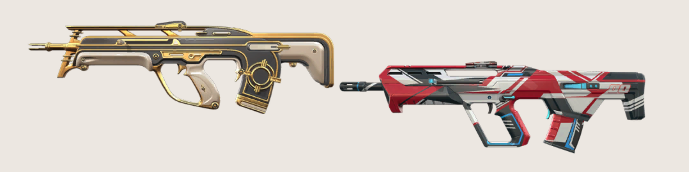
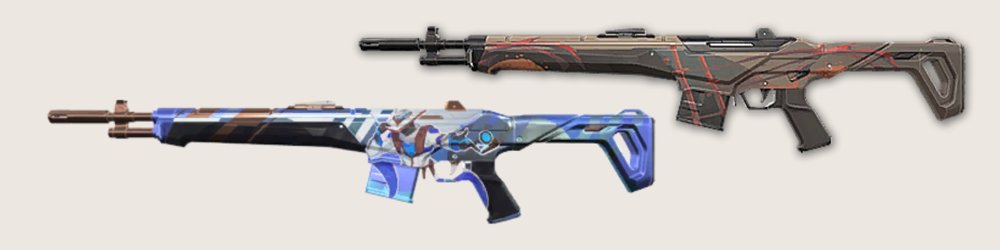
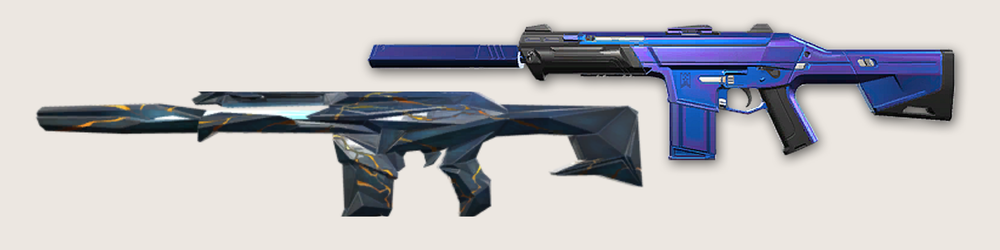
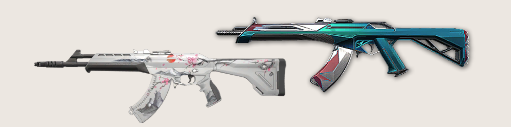

Os rifles são as melhores armas do Valorant. Quando se tem dinheiro para realizar um full armado, é com esse tipo de armamento que você quer se equipar. Funcionam bem em todas as distâncias, possuem dano altíssimo e cartucho recheado de balas.
. Bulldog: É o rifle mais barato do Valorant. Com 24 balas no cartucho, penetração média e dois modos de disparo (automático e zoom), até que o modelo é uma opção versátil, mas só compre caso os créditos estejam realmente em falta na sua equipe. Rifle parecido com a AUG, ou seja, tem aquela famosa mira de precisão que auxilia em combates mais distantes.
. Guardian: Também não é muito recomendada em rounds full armados. Trata-se de um rifle semiautomático que só é útil caso você tenha uma mira constante e precisa. Caso o contrário, vai deixar a desejar nas situações de pequeno e médio alcance. Fuzil estilo DMR, ou seja, cobre distâncias intermediárias. Está entre um rifle de assalto e uma sniper. Seus disparos são precisos e poderosos, mas a arma é bem pesadinha.
. Phantom: É a famosa M4A1 do Counter-Strike, ou seja, um dos melhores rifles do jogo! Seu ponto positivo é o recuo, que é menos brusco que a Vandal. Isso significa que você vai conseguir segurar o spray melhor. Ela só perde para a concorrente em tiros efetuados de distâncias mais longas. As balas desferem menos dano. É a M4 do Valorant, bastante utilizada em rounds full armados. Junto com a Vandal, é a melhor arma do jogo. Funciona melhor com o personagem parado.
. Vandal: Assim como a Phantom, Vandal é outro fuzil top class. É com esses dois carinhas que você quer ter em mãos nos armados completos. A AK-47 do Valorant, no entanto, possui um recoil bem chatinho de se acostumar, mas que é recompensado na constância do dano, seja de perto ou de longe. A probabilidade de headshots será maior com ela! visada por praticamente todo mundo. Versátil e cobre diversos tipos de situações, mas o seu recoil é alto.
